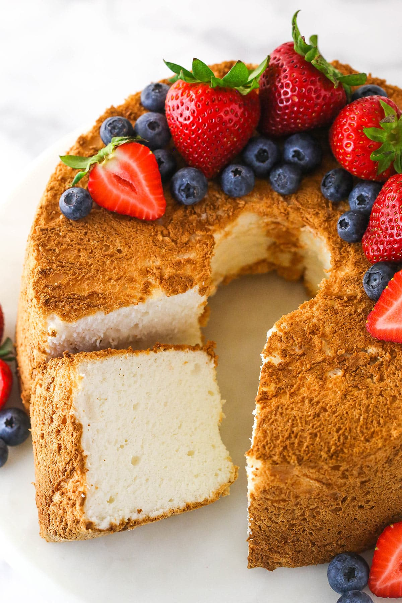

Irresistible Angel Food Cake!

Ready for a slice of heaven? We are no stranger to decadent and rich cakes. But what about
a cake recipe where butter, fat, and egg yolks run away in fright? Meet angel food cake.
Angel food cake is a low fat cake recipe made mostly from egg whites, cake flour, and sugar.
It’s pristine white on the inside with a chewy light brown crumb around the exterior. What
it lacks in butter makes up for in texture. This tall, tender, and timeless cake has a cloud-
like crumb and ultra light flavor.
Ingredients:
- Sugar
- Cake flour
- Salt
- Egg whites
- Cream of Tartar
- Vanilla Extract
Instructions:
- Pulse the granulated sugar into superfine sugar. Use a food processor or blender.
- Set 1 cup of the superfine sugar aside. You'll add it to the egg whites.
- Add cake flour and salt to food processor. Pulse them with the remaining sugar. This aerates
the dry ingredients.
- Sift and fold in dry ingredients. In 3 additions, sift and fold in the dry ingredients.
- Bake at 325°F (163°C). A higher temperature won’t properly cook the cake.
- Cool upside down on a wire rack. If cooled upright, the cake’s own weight will crush itself.
Cool it upside-down on a cooling rack so it holds its shape and air can reach it.